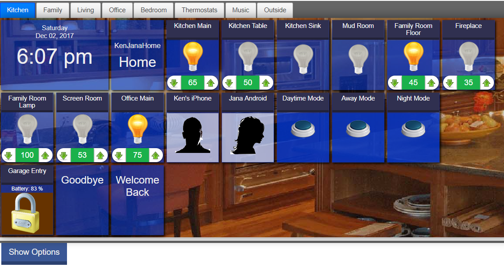

House Panel
House Panel Open Source Web App for SmartThings
Ken Washington (c) 2017
Introduction
HousePanel (HP) is the highly customizable open source web application for accessing and controlling a SmartThings equipped smart home from a Tablet, Computer, or even Smart Phone. HousePanel is the primary app of the Open-Dash open source community.HP is designed to give the user full control over the look and feel of their panel controller. It does require some effort to install and configure, but once set up, making fine tunings and adjustments are relatively simple. Most customizations involve editing a CSS file. HP runs on a customer-provided web server and does not expose your personal data nor any details about your SmartThings environment to the developer or any other party. You are in total control. The default settings are designed by a professional web designer to create a highly acceptable user interface for non-technical people. This was the motive for writing HP in the first place. It is designed to not look and feel "geeky". By default the tiles are large and colorful, placed on beautiful full color backgrounds. Finally, a more advanced application of HP is that it can be used as a text-based web service to return json strings of status about your home to any other web application. This advanced feature is mostly for developers and can be safely ignored, but if you are a developer then you should read the final section of this Wiki on Advanced Applications of HP.
Features
HousePanel can display and/or control most types of things in the SmartThings ecosystem, including:- switches
- dimmers
- momentary buttons
- contact sensors
- doors
- thermostats
- lights
- locks
- motion sensors
- bulbs
- water sensors
- valves
- blanks
- clock
- images
- mode
- routines
- weather
- WebCoRE pistons,
A very important feature of HousePanel is the Tab layout. All controllable things are presented on one of several Tabs that can be quickly swapped in and out of view. This uses the tabbed display capability of modern web browsers. Under the hood we use jQuery to make this efficient. This means that any number of user pages can be displayed, and on each page, any number of "things" can be shown and controlled. Later in this document we will explain how to customize the names of pages and the number of pages used. The default is 6 pages and each page has a fixed name. Pages can be easily renamed from within the web app. We will show how to do this later.
Requirements - What You Need to Use HousePanel
HousePanel is a web application written in PHP and Javascript that is paired with a SmartThings SmartApp written in the Groovy language. To use Housepanel you will need a modern browser with Javascript support. Obviously you will also need a SmartThings account with owner access. You will also need to have owner access to a web server of some type capable of hosting PHP applications. You should also have access to a good CSS editor that you will use to make custom changes to your HousePanel configuration. You can do this with any text editor, but you will be much happier if you are using a coding editor that assists you with the crazy syntax of CSS and graphical aids for color selections. I personally use NetBeans which is my favorite coding editor. You can get a copy from the Oracle website at www.netbeans.org. If you do use NetBeans be sure to install the plugin for PHP editing. I also find the color code preview plugin to be useful for picking colors easily.Installation
Server Options and Instructions
Option 1 - A public facing hosted web server
This option is perhaps the simplest and provides the most flexibility, but less security and speed than the other two options below. To use this option you need to simply create a directory on the server that hosts your public-facing web pages, such as "housepanel". For the purposes of this documentation we will assume that the directory name is "housepanel". You can use any method you like to do this but the easiest is probably using a full-featured FTP program. An important step before proceeding is to set the permissions of that directory to enable write access. How this is done depends a lot on what type of server you are using. Most public web servers are Linux and Apache based in which case you can use chmod 666 on the directory. Some FTP programs will support this, others won't. You may need to use the file browser function of your web hosting service to change the permissions to "666" which means the owner, groups, and the world can read and write to the folder.Option 2 - Dedicated computer on your LAN
This option has great flexibility and speed as well as more security over a public facing web server. It is more secure because it runs on your LAN and is typically not exposed to the Internet. Your home router shields all computers from the Internet from outside access unless you bypass that usin either DMZ or port forwarding. The disadvantage is you can't access this server unless you are at home and on the same network. This can be a big restriction but many people don't control their smart homes using a panel when they are away, so I personally don't think this is a major limitation. To use this option you will need to have a web server installed on your dedicated computer, and you will need to leave that computer on at all times that you want the panel to work. Instructions for installing Apache on a dedicated home PC or Mac can be found at http://www.apache.orgYou will then need to install PHP on your web server and enable cUrl. Instructions for doing this are beyond the scope of this Wiki. You can find excellent instructions and examples for how to do this all over the Internet. As with the public web server option, you will also need to set the permissions of the directory where you want to install HousePanel. Since this is a local computer you can do this using standard methods for your local computer. On a PC this involves right-clicking on the directory and setting permissions. But first you will need to create the directory within your web hosting area. For example, make a directory called "housepanel" under c:\htdocs on a standard Apache install. I have not tested HousePanel on IIS but it should work fine.
Option 3 - Raspberry Pi
This is by far my favorite and the strongly preferred option. Raspberry Pi single board hobby computers are perfect for projects like HousePanel. This is because take up very little space, use a small amount of energy, and they are relatively easy to configure. Unlike a dedicated computer, a Raspberry Pi can be neatly tucked away just about anywhere and go un-noticed. To use this option you will need to first of all own a Raspberry Pi and you will need to know how to manipulate it and program it. There are many web tutorials out there that show you how to do this. When you install a rPi for use with HousePanel I recommend that you use a fixed IP address so that you know where to find it every time. This can be accomplished in several ways. The easiest way is to use your router to tell it to give your rPi a fixed IP based on its Mac address. Next you will need to have the Apache web server installed on the rPi. The recipe below will point you in the right direction but if you get stuck please refer to any number of online tutorials about how to set up a rPi and install both Apache and PHP.Start by either connecting your rPi to a monitor and keyboard, or logging into it remotely using SSH. If you are using a PC I recommend using the "putty" program for SSH. It can be downloaded for free. You may need to first use a monitor and keyboard to enable SSH. Once you are logged into your rPi use the following commands to configure Apache with PHP.
sudo raspi-config
> Interfacing Options > SSH then enable
> Change the default timezone.
Next, you need to configure PHP to use cUrl. This should be on by default, but check php.ini to be sure. Look for your php.ini file and then edit it using nano or vim. Within php.ini search for "curl". You should find a line that loads the curl library. Sometimes that line is commented out with a "#" in the first column. If you have that activate the loading of the curl library by uncommenting that line.sudo apt-get update sudo apt-get -y upgrade sudo apt-get -y install apache2 php5 php5-gd wiringpi raspi-gpio rpi-update --fix-missing sudo rpi-update
Finally, restart Apache using sudo service apache2 restart
Testing your PHP Web Server
Before proceeding I highly recommend that you test your web server and confirm that it works with PHP and cUrl. To do that create a simple file with just the following in it:
<?php
phpinfo();
If things are working you should see a PHP information page returned. Scroll down and look for a section named cUrl to see if it is activated. The HP distribution files that we will download later includes a phpinfo.php file so if you prefer you can wait and perform this test after uploading the files, in which case you won't have to worry about creating this file.
If loading this page generates an error, then you know your web server was not installed correctly and it will need to be addressed before you can proceed. Detailed troubleshooting of the install steps for Apache, PHP, and cUrl are beyond the scope of this Wiki but there are ample resources on the web that can help you troubleshoot this and get it working before you proceed.
Installing the HousePanel Application
Install and Configure HousePanel.groovy
Start with installing the HousePanel.groovy file in your SmartThings smartapp IDE repository. Unfortunately I was not able to get the SmartThings IDE option to work with my account so you will have to install this manually. First, go to the Open-Dash GitHub account at http://github.com/open-dash/HousePanel and open the HousePanel.groovy file. With this file open click on the "raw" icon in the upper right corner. This will open a window showing just the "raw" lines of code. Copy the entire file to the clipboard using Control-A or Command-A on mac, then Control-C or Command-C on a mac. Navigate back to your ST IDE at graph.api.smartthings.com. Make sure you are logged in. Then go to the SmartApps section using the top menu. Click on create new SmartApp then select "from code". In the blank window that opens, paste the code that you copied to the clipboard here using Control-V or Command-V on a mac. Then select Save then Publish "for me".If you are an experienced GitHub user you can also feel free to just clone or fork your own copy into your GitHub account and work with it from there. The advantage of this is you can track and manage any local edits you make and GitHub will do all of the work of managing your changes for you as usual. The other advantage of that approach is if you make improvements, you can contribute them to the Open-Dash movement by making a pull request. I would appreciate seeing such community contributions that will of course help make HousePanel get much better over time.
Before you leave the ST IDE, you will need to enable OAUTH2 in the IDE app settings. To do this, select App Settings and turn on OAUTH2 in the options. This will reveal two long strings of data called CLIENT_ID and CLIENT_SECRET. These values are important and must be copied and saved for use in the next step when you are configuring your web server.
Install PHP Code on Web Server
In this step you will install the PHP application by copying the files from the following GitHub into a directory of your choice:
http://github.com/kewashi/hpanel-server
A typical place would be in its own directory called /housepanel. Be sure
to preserve the directory structure when you download and then upload the
files to your web server.As with the groovy file, you can also fork this to your own GitHub space and then clone it down to your local PC or mac if you are familiar with using GitHub. If you are using Git on your local PC I recommend this approach since it will allow you to make local edits and pull requests for any improvements you want to be considered. As a bonus, if you are using NetBeans editor that editor talks nicely to Git to tell you want edits have been made using visual cues.
The final install step is to edit the file named "clientinfo.php" This file has placeholder data in it for your CLIENT_ID and CLIENT_SECRET constants that must be obtained from your installation of housepanel.groovy. You will find that information in the SmartThings IDE as described in the previous section. The clientinfo.php file will look like this:
<?php
define('CLIENT_ID', 'a1b23aa1-a123-123a-b12c-12345abc1234');
define('CLIENT_SECRET', 'a123456a-bc12-1212-123a-a12312312312');
define('ST_WEB','https://graph.api.smartthings.com');
define('TIMEZONE', 'America/Detroit');
// provide the access_token and endpt values below if your browser does not support cookies
// this can also be used to skip the authentication step if you are operating in a secure internal environment
// *** WARNING *** do not do this if your website is exposed to the world and discoverable via search
// doing so will enable anyone in the world to control your home
// the access_token and endpt information can be obtained by going through authentication once
// and then loading your webpage using mypanel.com/housepanel.php?useajax=showid
// this will return a page with the access_point and endpt data plus other info about your devices
define('USER_ACCESS_TOKEN',FALSE);
define('USER_ENDPT',FALSE);
define('USER_SITENAME',FALSE);
The ST_WEB variable can also be changed here if your IDE is at a different location which will be the case if you are in Europe. The TIMEZONE can also be updated in this file to reflect where your house is located. The times displayed will always be shown in this time zone.
For now you can ignore the last three variables. These will be discussed later when we explain how to customize HousePanel or how to use it as a GhostScript endpoint or as a generic SmartThings web service. The comments provided in the sample file above should give you a pretty good hint as to what these options are for and how they are used, but don't worry, we will explain this in detail later.
Set Server Permissions
This step ensures that your web server can create and update as needed an options file that is generated dynamically when you run the web App. To do this you will need to either SSH into your server or use a FTP program that allows file permissions to be established and edited. If you are using Option 1 then FTP is your best bet. Alternatively some web hosting services provide separate tools for setting permissions. Whichever method you use, the directory where you installed all the files must be set to read/write. In Linux/Unix terminology this is done using "chmod 666 /housepanel" assuming your directory name is /housepanel. If you are using Option 2 then your local web server configuration tool should be used to set the directory to read/write. If you are using Option 3 - Raspberry Pi - then your best option is to SSH over to the Raspberry Pi and then use the Linux command "chmod 666 /var/www/htdocs/housepanel". Replace the directory name here with where your Apache stores html files and the name of the directory where you installed the HousePanel files.Final Check
If you have made it this far, you are ready to do an initial test. Before you do, let's review things to confirm that you have the following set up. If you are missing anything, you should go back to the relevant section and complete that step:- Web server set up with PHP configured
- Confirmed that cUrl is activated in your PHP
- HousePanel.groovy installed in your SmartThings IDE with OAUTH2 activated
- clientinfo.php file updated to include your CLIENT_ID and CLIENT_SECRET real information
- hpanel-server files uploaded to its own directory on your web server
- the directory above configured to read/write using "chmod 666 yourdirectory"
- Web browser with javascrpt and cookies enabled
If all of the above is true, you are ready to run HousePanel for the first time. Before trying this on your Tablet or Cell phone, confirm that it loads properly in a desktop browser. I have tested HousePanel with Chrome (on a PC, iPhone, iPad, and Android table), Microsoft Edge (on a Windows 10 PC), IE 11 (on a Windows 7 and Windows 10 PC), Safari (on a Mac and iPhone), and Fully Kiosk Browser (on PC and an Android tablet). All have been confirmed to work but others options are likely to work as well. Chrome and Edge appear to work best and are fastest. Before testing make sure Cookies and Javascript are enabled. Browse to the web server that you installed in the first step and the directory where you stored HousePanel. Using the same name examples we have been using throughout this guide, that would be:
http://192.168.1.50/HousePanel/housepanel.php
Running HousePanel
First Time Launch - Authenticating
When you first run HP it should look something like:[[TODO: Authentication image]] If you have used other Web-based SmartThings apps this should look familiar to you. This is where you provide your credentials. This should be the same username and password that you use to access the SmartThings Web IDE and your account online. It is this authentication step that prevents anyone from accessing your HousePanel installation. This is why it is important to protect this login information; otherwise, anyone who has it will also be able to access your HousePanel and control your smart home. On the other hand, if you installed HousePanel on a Raspberry Pi on your home local network, then only people with access to your home network will have access to HousePanel. This gives you one extra layer of protection and is why I prefer the Raspberry Pi installation option (see Option 3 in Section 1). This same extra layer of protection exists for Option 2 installations on a PC or Mac with a web server, but such a server must stay on and can be more easily accessed via a keyboard than a rPi that has been tucked inside a cabinet. Anyway, enough preaching about the benefits of the rPi install.
Once you have authenticated using your credentials, HousePanel will present a list of your hubs. Select which hub you want to associate with HP. Most people only have 1 hub so there isn't any decision to make here, but you will still need to explicitly click on the one hub that you have. I have two hubs so in my case I have to pick the one that I want to control. Anyway, after you click on the hub, all of the supported things will be shown in a list that looks something like this:
[[TODO: include image]]
This is where you select which things you want HousePanel to have the option of displaying and controlling. IMPORTANT!! I am saying the "option of" here because HP does not have to display everything you select here. It is just that ONLY the things selected here will be possible to display. The way you select what is displayed where and how they are displayed will be described in the next few sections. What I recommend doing here is to just select everything that is supported, which will be everything shown. In my installation the only thing I didn't include is a light that I have in my food pantry that is activated by a door open sensor, since I don't ever anticipate needing to turn the lights on in a closed food pantry. Anyway, just select everything and you will be good to go. To finish this step click on the Save button at the bottom of the screen. This will be the moment you waited for...
What happens next is control is returned to HousePanel and the app starts by reading all things and their states that you selected. It then assigns unique ID numbers to each thing, it automatically organizes each thing selected into one of several pre-defined Rooms. That information is then saved in a file called hmoptions.cfg that is saved on your server. In our example case, it will be stored in: "http://192.168.1.50/housepanel/hmoptions.cfg". As an aside, this is why you had to do the step of making your server directory Read/Write. Without that setting HousePanel will not be able to save this file. As it turns out it will actually run just fine even if it can't create this file, but each time you run you will see the same default configuration. If all goes well HousePanel will then render the page and display it to you. It will look something like:

If you are curious how HousePanel decides what thing to put in which room by
default, here is how it does it. First, HP creates seven default rooms
named Kitchen, Family, Living, Office, Bedrooms, Outside, and Music.
Then it places and activates any thing whose name contains one of several
keywords into the corresponding room. The keywords are listed below
separated by "|" for the rooms noted. This keyword map can be found in the
housepanel.php source code in the getOptions subroutine roughly around line 700.
If you are comfortable with editing source code, feel free to change these
keywords to your liking; however, end users will have other ways of moving
things around and renaming rooms. We'll also discuss how to add or delete
rooms in a later section by editing the hmoptions.cfg file directly.
Kitchen: "kitchen|sink|pantry|dinette|clock|mode" ,
Family: "family|mud|fireplace|casual|thermostat|weather",
Living: "living|dining|entry|front door|foyer",
Office: "office|computer|desk|work",
Bedrooms: "bedroom|kid|bathroom|closet|master|guest",
Outside: "garage|yard|outside|porch|patio|driveway",
Music: "sonos|music|tv|television|alexa|stereo|bose|samsung"
Using HousePanel
Your default HP page should look something like the image in the prior section. Before getting into how to customize things, lets first explore how to use HP to get the most out of it. Most of it will be obvious and intuitive, but a few hidden gems require explanation. For starters, you can browse different rooms by clicking on any tab at the top of the page. Notice that the room display changes INSTANTLY! This is because HP renders all pages in advance and organizes them into tabs. When you select a different tab you are just telling HP to show that tab that was previously created.Turning Things On and Off
While on any page, you can click or tap on any thing tile to change its state. For example, clicking on "Kitchen Light" will turn the light off if it is on, and will turn it on if it is off. If you click on a closed door, it will open. However, not all things support state changes from HP. Door and motion sensors for example are display only tiles so clicking on them will do nothing. Same for the clock and blank tiles. Tiles that support mode changes include switch, dimmers, doors, mode, routines, thermostats, and music tiles. If you are using a computer, the cursor will change to a pointer when you hover over thing tiles that can be clicked on to change state. Other thing tiles will remain an arrow icon.Dimmer, thermostat and music tiles have multiple controls that can be individually controlled by clicking on them. For example, each thermostat has a heater and an AC control and each one has up and down arrows that can be clicked on to adjust the temperature setting. On music tiles, play, pause, skip, and stop can also be clicke on. On dimmer tiles you change the intensity of the light by clicking on the up or down arrows. When you do this the light will always come if it is off.
Moving Things and Rooms Around
One of the most exciting features of HousePanel is the ability to highly customize its look and feel. The first level of customization involves simply moving existing tiles around on a page. To do this, click and hold down any tile and then move it. It will move with you. Release it and it will permanently be relocated to that spot. Note: this will only be permanent if your hmoptions.cfg file is read/write. You can apply this same maneuver to page tabs. Simple click and hold a tab and move it left or right to reorder your rooms. The new room location will be permanent on this server.Adding or Removing Things from Rooms
Deeper customization involves adding or removing things to your rooms. To do this scroll to the bottom of the page and click on the Options button in the lower left corner of the page. This will load a page with a two-dimensional matrix of all your things and all you rooms that looks like this:
Customizing HousePanel
Styling Things Using CSS
The most important type of customization is performed by either creating your own custom style sheet or editing the provided one in the "skin-housepanel" directory. When you unpack or clone the master source files this directory will exist underneath the master root location where you installed hpanel-server. It is best to keep a local copy of all files to edit and then upload them when you are ready to your server. If you are using NetBeans then that IDE can handle uploads for you automatically if you set up the project files with your FTP username and password. Doing this is beyond the scope of this Wiki but you can find instructions in the NetBeans help file. To begin customizing open the housepanel.css file into your editor. That file will have many well designed defaults for most types of HTML classes and tags that you will find in the displayed webpage. In the following sections we define how you would alter these settings.Background Images on Tab Pages
All tabbed pages inherit the property of the "div.panel" style that is defined in the default CSS file. The default should look something like this:
div.panel {
display: inline-block;
border: 0px solid #3333cc;
padding: 2px; width: 100%; margin: auto;
position:relative; background-repeat: no-repeat;
background-position: left;
box-shadow: 0px 0px 41px rgba(0, 0, 0, 0.50);
-moz-box-shadow: 0px 0px 41px rgba(0, 0, 0, 0.50);
-webkit-box-shadow: 0px 0px 41px rgba(0, 0, 0, 0.50);
}
Each specific tabbed page is identified by a <div class="panel-name"> style with the name "panel-" pre-pended to the name of the page shown on the tab. Case is not significant when doing this styling. For example, the Kitchen page is tagged with div.panel-kitchen. This is the setting one would alter in the CSS file to provide a unique styling for any page with the tab named "kitchen". The default styling is defined here:
div.panel-family, div.panel-familyroom {
background-image: url('family.jpg');
}
div.panel-kitchen, div.panel-dinette {
background-image: url('kitchenroom.jpg');
}
div.panel-formal, div.panel-living, div.panel-livingroom {
background-image: url('formal.jpg');
}
div.panel-outside, div.panel-garage {
background-image: url('outside.jpg');
}
div.panel-office, div.panel-library {
background-image: url('office.jpg');
}
div.panel-bedroom, div.panel-bedrooms {
background-image: url('bedroom.jpg');
}
div.panel-music, div.panel-theater, div.panel-entertainment {
background-image: url('music.jpg');
}
div.panel-thermostats, div.panel-thermostat {
background-image: url('thermostat.jpg');
}
Default Thing Styling
All things displayed in HousePanel inherit the syling tied to the <div class="thing"> tag style. The default should look something like this:
div.thing {
display: inline-block;
margin: 3px;
text-align: center;
vertical-align: top;
border-top: 0px solid #cccccc;
border-right: 0px solid #cccccc;
border-bottom: 0px solid #ffffff;
border-left: 0px solid #ffffff;
background-color: rgba(0, 51, 204, 0.6);
box-shadow: 2px 2px 7px black;
color: #eeeeee;
cursor: default;
width: 120px;
height: 160px;
}
Specific Thing Type Styling
Any given thing has a known thing type and each type can be styled distinctly. This is done by providing styling information tied to the <div class="thingtype"> tag, where thingtype is one of the recognized types of things that HousePanel supports. For example, if you wanted to make all things of type "switch" look a certain way, you would style the following block:
div.switch {
width: 118px;
height: 112px;
}
div.thing.switch-thing {
background-image: url('mycat.jpg');
}
Styling Things Based on State
Things in HousePanel that can be clicked upon typically also change state. The current state of all such things is available to be used to provide state based styling. The most common example of this is a switch, which changes the styling "div" to include "on" or "off" based on whether the switch is on or off in state. Using this one can provide a unique image or unique color styling based on whether the switch is on or off. The default CSS uses this to style "on" switches to use a bright light bulb, and "off" switches to use a dim light bulb. The pertinent lines in the default CSS file are here:
div.switch.on, div.switch.light.on, div.switchlevel.on, div.bulb.on, div.light.on {
background-image: url('bulbon.png');
}
div.switch.off, div.switch.light.off, div.switchlevel.off, div.bulb.off, div.light.off {
background-image: url('bulboff.png');
}
Thermostat, Music, Weather, and other Complex Formatting
The principles and concepts described above apply equally well to thermostats and music thing tiles. The difference is that these tile types involve more complex multi-part elements. The important thing to note is that each individual element can be styled individually or all of them can be styled using the master div information that wraps around the entire tile. For thermostats, the master div information is tagged with div.thing.thermostat-thing following a similar pattern as the simpler tiles. This applies to all complex tiles such as Music and Weather tiles. The following styling from the default file presents the temperature reading as a blue-green circle. This can be changed to whatever you prefer.
div.thermostat.temperature {
display: inline-block;
width: 118px;
background-color: #006666;
color: #ffffee;
border: 2px solid white;
box-shadow: 5px 4px 15px black;
cursor: default;
text-align: center;
height: 50px !important; width: 50px;
padding: 4px 3px 0 3px;
margin-top: 10px; margin-bottom: 10px;
border-radius: 50%;
font-size: 20px;
line-height: 45px;
-webkit-border-radius: 50%;
-moz-border-radius: 50%;
}
Customizing Special Things and Tiles
HousePanel includes a number of special things/tiles that are by default styled appropriately; however, in keeping with the flexibility principle of HousePanel, all of them can be customized to your liking. The custom tiles and how to customize them are described below.Blank Tiles
Blanks are just that - blank. They are used as spacers. Four blanks are provided that can be added to any page using the Options feature described previously. All blanks are styled as transparent in a standard tile size. The div tag used to style all blanks is div.thing.blank-thing so this div can be styled to make blanks look differently. For example, one might want to use blanks as dividing lines to separate tiles into sections. Four different blank sizes are provided under the names b1x1, b1x2, b2x1, and b2x2. The names indicate the default sizes of these four blank tiles using the following default styling:
div.b1x1, div.b1x2, div.b2x1, div.b2x2 {
width: 120px; height: 160px;
font-size: 0px; padding-left: 0px;
}
div.b2x1, div.b2x2 {
width: 244px;
}
div.b1x2,div.b2x2 {
height: 320px;
}
Clock Tile
The clock special thing is a digital clock tile that by default shows the day of the week, the date in MMM dd, yyyy format, and the time in hh:mm AM/PM format. The overall clock tile can be styled by modifying the div tag div.thing.clock-thing. By default this element is styled to be a 246x160 blue tile but it need not be. All three sub-items can be styled using the tags: div.clock.weekday, div.clock.date, and div.clock.time respectively. Unfortunately the actual format of the sub-item fields cannot be modified, but their font, color, size, and placement are all fair game. The overall tile size can be styled using div.thing.clock-thing. Finally this tile has a name bar just like all others, but by default it is hidden. It can be displayed and uniquely styled using the tag name of div.thingname.clock.Image Tiles
Four place-holder image tiles are provided for end-user unique styling. These tiles are named "img1" through "img4" and are styled using the div tag div.thing.image-thing. By default this styling is a double-wide tile that forces the image to stretch to fill the tile (using background-size: cover). Each individual image tile is where one would provide the online asset containing the graphical image to display. For example, the img1 tile would be styled to display a "jpg" file using the following:
div.image.url.img1 {
background-image: url("livingroom.jpg");
}
Mode Tiles
Four mode tiles are provided that each can be used to show the current state of the SmartThings location. This will be one of the modes defined by the user in the SmartThings app, such as Home, Away, or Night. Mode tiles can be styled by modifying the div tag div.thing.mode-thing. There are four mode tiles that parallel the naming convention used for blank tiles: mode1x1, mode1x2, mode2x1, and mode2x2. The default sizes are the same as their equivalent blank defaults. Each mode tile contains three sub-items: mode.themode, mode.name, and mode.zipcode. By default mode.zipcode is hidden. The actual mode within the "mode.themode" sub-item is styled to be larger than the name of the hub, which is in the mode.name sub-item. Again, these sub-items can be uniquely styled or even hidden to your liking.Routine Tiles
Routines are "Hello Home" actions that are defined in the mobile app. These are presented as boxes without title bars by default. The name of the routine is shown by default as simple text in an 18 point font. The tag div.thing.routine-thing can be used to create a unique look for routine tiles. Alternatively the specific label sub-item under the div.routine.label tag can be styled. The latter is what is in the default CSS.Weather Tile
Of all the special tiles the weather tile is the most complex. Unlike other tiles this tile is associated with a specific device instead of with a generic capability. For this reason there can only be one weather tile. This one weather tile can be displayed in any or all rooms. It can look different in each room because each room is wrapped with a room "div" tag that can be used as a qualifier. The overall weather block is styled using the tags div.thing.weather-thing and div.weatherWeather tiles have many sub-items and each one can be uniquely styled. The code block below is from the default CSS file showing just one of many possibilities. Note that several sub-items are hidden by default in this example. The outside temperature is shown using a similar circle as is used with thermostat tiles.
div.thing.weather-thing, div.weather {
text-align: center;
height: auto;
}
div.thing.weather-thing {
background-color: rgba(50,50,50,0.4) !important;
width: 240px;
}
div.weather.temperature, div.weather.feelsLike {
display: inline-block;
width: 118px;
background-color: #006666;
color: #ffffee;
border: 2px solid white;
box-shadow: 5px 4px 15px black;
cursor: default;
text-align: center;
height: 60px !important;
width: 60px;
padding: 4px 3px 0 3px;
margin-top: 10px;
margin-bottom: 10px;
margin-left: 10px;
margin-right: 10px;
border-radius: 50%;
font-size: 20px;
line-height: 55px;
-webkit-border-radius: 50%;
-moz-border-radius: 50%;
}
div.weather.feelsLike::before {
content: "~";
}
div.weather img {
margin-left: 15px;
margin-right: 15px;
}
div.weather.wind::before {
content: "Wind: ";
}
div.weather.wind::after {
content: " mph";
}
div.weather.humidity::before {
content: "Humidity: ";
}
div.weather.percentPrecip::before {
content: "Rain: ";
}
div.weather.humidity::after, div.weather.percentPrecip::after {
content: "%";
}
div.weather.sunriseset {
margin-top: 10px;
}
div.weather.sunriseset, div.weather.humidity,
div.weather.wind, div.weather.percentPrecip, div.weather.alerts{
background-color: #333333;
margin-bottom: 4px;
}
div.weather.timeZoneOffset, div.weather.alertKeys,
div.weather.sunriseDate, div.weather.sunsetDate,
div.weather.illuminance {
display: none;
}
div.weather.weatherIcon, div.weather.forecastIcon {
display: inline-block;
}
WebCoRE Pistons
WebCoRE is the wildly popular "Community Owned Rule Engine" by @ady624 on the SmartThings forum. If you are a WebCoRE user then you will see all of your WebCoRE pistons in the Options matrix as described in a previous section. You will need to select the pistons you want to display in the room columns where you want them to show up. Once you do that they will appear in a style defined by the tags: div.piston-thing, div.piston, div.piston.webcore, div.piston.pistonName, and div.piston.pistonName.firing. The default shows a graphic that looks like an automotive piston and when it is fired it looks like it is on fire.Advanced Styling of Specific Tiles
Up to this point we have described how to manipulate and style specific categories of things. In this section the overall format of the rendering of things on the webpage is described. Using this information one can uniquely style any one given thing or device. For example, using the methods in this section it will be possible to style a specific door using a unique icon (such as a barn door), while all other doors use a regular door icon.To understand how this works it is best to start with defining how all tiles are organized and accounted for. All tiles on the HousePanel webpage follow the following template:
I know this looks intimidating, but it will make sense as we go through each element and the nomenclature. First, everything in green italics is a variable that changes with each thing and sub-item. Second, the type variable is the type of the thing, such as switch, switchlevel, contact, thermostat, weather, or piston. Third, everything inside of curly backets { } is optional and may not be present at all. The rules for what shows up in the file and what doesn't are as follows:<div id="t-n" class="thing type-thing"> <div id="s-n" class="thingname type"> tilename </div> Loop i = 1 to N ( <div id="a-n-subitem[i]" class="type {subitem[i]} {status[i]} names[i]" > content {status[i]} </div> ) </div>
The {subitem[i]} parameter is shown if it is a different word than the thing "type". This is because the thing type is already included in the class name so this avoids listing it twice. The word "value" is also skipped if it is the first sub-type. This is done because subitems named "value" only happen when there is one and only one sub-type. The {status[i]} value is shown if it is a single state word such as "on", "closed", or "locked". Multiple state values are not listed in the class. This treatment is used to allow state-specific styling as described earlier. For example, switches that are "on" will have the word "on" included in the class name so that can be used to make on switches look different than off switches.
The Loop statement is intended to indicate that there are potentially multiple "N" blocks that follow the shown template. For example, in dimmer switchlevel things the value of N is 3 where one sub-item is the switch and a second sub-item is the level. The third sub-item is an indicator light that is hidden by default. More complex tiles like Weather tiles have more sub-items so N will be larger.
The {names[i]} parameter included in the class name deserves special mention. This represents the first three whole words taken from the name of the thing. For exmaple if I have a switch named "Kitchen Table Lamp Upstairs" then the class for this item will include the words "kitchen", "table", and "lamp" -- but not the word "upstairs". The full class name if the switch is on will be "div.switch.kitchen.table.lamp.on". Now if we assume this same thing is a dimmer switchlevel thing, the second subitem of type level will add the subtype "level" to the class making the full class name "div.switch.level.kitchen.table.lamp.on". Note that in our first example of a non-dimmer regular switch, the word switch didn't get listed twice because the sub-item matched the type and it was skipped.
Finally, the parameter "n" shown in the template is a unique number assigned to every visible element on screen. This is the number that you must use if you want to style a specific thing to look different than all other things of the same type and capability. You can find this unique number by inspecting the visible thing in your browser or by revealing the source code. Warning - the screen will be very messy if you use the source code method. Once you know this number you can style any specific sub-item using "#a-n-subitem[i]" or you can style the entire tile using "#t-n". Note that this is not a "div" based styling but an "id" based styling in CSS.
Renaming, Adding and Deleting Pages
Pages can be easily renamed from the Options page. While on any page scroll to the bottom and click on the Options button. This will bring up the matrix shown earlier. On this matrix, the room names listed on the top row can be edited in-place by clicking or tapping on them. This will bring up a text box where you can type in any room name you want. It is strongly recommended that single word room names be used. This is because single room names simplify the class name framework for customizing each room.Unfortunately there is presently no way to add or remove a room directly from the web interface of HousePanel. To add or delete rooms you must do so manually by editing the hmoptions.cfg file. You will find this file in the home directory of your HousePanel configuration. This file is a direct write of the room options in "json" format so care must be taken to ensure that your edited file follows strict "json" formatting rules. Note that this file will not exist on your local machine unless you download it first, because it is dynamically generated by HousePanel when you run it for the first time and it is updated every time you make an edit to the options. So download the file and load it into your favorite editor. You will see the names of the rooms listed in two places. You will need to make your desired room changes in both places. When done, save the file and re-upload it to your server.
The file looks like this.
{ "rooms":
{
"Kitchen":0,
"FamilyRoom":1,
"LivingRoom":2,
"Office":3,
"Bedrooms":4,
"Outside":5,
"Thermostats":6,
"Music":7
},
"index":
{
"routine|01234717-1234-1244-1234-abcd12341234":197,
"routine|12341234-abcd-1234-abcd-123412341234":193,
"switch|abcdabcd-1234-1234-abcd-123412341234":0,
"switch|1234abcd-1234-abcd-1234-abcd12341234":1,
...
"image|img3":116,
"image|img4":117
},
"things":
{
"Kitchen":[113,107,193,47,16,50,25,79,87,104,103,139,109,102,168],
"LivingRoom":[0,2,5,11,12,29,32,41,45,52,53,58,59,76,78,82,84,91,92],
"FamilyRoom":[1,27,30,34,39,42,54,57,83,88,99],
"Outside":[7,14,20,23,33,35,36,37,38,46,56,61,65,78,91,118,119,169,170],
"Office":[10,44,80,101,131],
"Bedrooms":[24,28,33,17,43,48,51,56,85,86,89,90,167],
"Music":[60,63,64,68,70,99,100,101,166],
"Thermostats":[102,167,168]
},
"skin":"skin-housepanel"
}
You will have to reauthenticate and then your new room setup will be active.www.yourwebpage.com/housepanel.php?code=reset